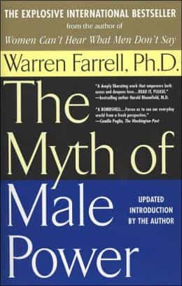
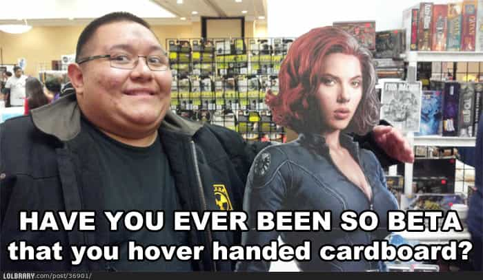

Anil Dash is back at it again, this time taking on people who disagree with his policy against only retweeting members of one sex.
A picture of his claims, as made by a devoted follower:
![[Image: BgT9wtqCcAEfAt7.jpg]](https://pbs.twimg.com/media/BgT9wtqCcAEfAt7.jpg)
His list:
“You should just retweet the best people!” I do.
![[Image: 01347c36d85dd3639a9fef9569d6a145375a31f5...5d8d6a.jpg]](http://s2.quickmeme.com/img/01/01347c36d85dd3639a9fef9569d6a145375a31f5f3e0603ffec42d243f5d8d6a.jpg)
“This is reverse sexism!” No, if I were calling for a few centuries of you being treated as property and said you shouldn’t be able to vote, that would be reverse sexism.
Does he know what the definition of sexism is? Further, women weren’t treated as property, as people who do that are narcissists. Men weren’t narcissists back then in America, they were obsessive types. When Freud first starting his practice in the late 1800’s, he noted obsessive behaviors: compulsions to chop wood, put in long hours on the job, intensely worried with the quality of their work. They weren’t complaining about internal emptiness or reflexive rage.
Further, Dash inadvertently makes a Eurocentric observation about voting. I assume he is talking about America, but since he doesn’t specify a particular nation and since men like him assume universality of his ideological stances (narcissism), he assumes that voting rights matter in every country. It is only a recent world-wide event that countries have elections — not that many of them matter. He seems to be one of those idiots that think women didn’t have the right to vote until the 19th Amendment was passed. Wrong. Women could vote for everything in Wyoming. Virtually all states already had voting rights for women at the local level (hint, the most important level) and for state representatives and for state senators and governors. As for the federal level, men couldn’t vote for their own Senators until 1913, 7 years before women got the right to vote at the federal level. Further, some states as late as the Civil War still barred men who didn’t own land from voting. As usual, the meta-narrative spun by progressives falls apart precisely reality doesn’t fit prefabricated notions of clear-cut oppression.
“You’re just doing this to get laid.” Oh, son. You know what I do to get laid? I treat women as humans while being super smart and attractive. This is a trick that works really well, so I’ve kept doing it solely for my wife’s benefit.
![[Image: Best-friend51.jpg]](../betapedia.com/wp-content/uploads/2014/01/Best-friend51.jpg.html)
Let me get this straight, bro. Your success with women stems from this idea that you treat women as humans, unlike those other sub-human scum you feel so reflexively superior towards? He doesn’t realize that he claims he isn’t a narcissist….while implicitly admitting he has issues with narcissism. Odds are, Dash plays the “Michael Scott” version of game with him whip-sawing between brief moments of perceived omnipotence to slavish subordination to women. He acts out his superiority complex on men who “act out” what he wants to do with women: boss them around, lord over them and treat them like little more than a soiled doormat.
Further his claim that narcissism doesn’t appeal to women is incredibly misguided. The “Dark Triad” of male attractiveness to women is this: narcissism, Machiavellianism and impulsivity (or sometimes referred to as psychopathy). Guys like Dash don’t understand that women don’t turn to media for truth, but for comfort. Just because a bunch of women are leaning in and nodding along in a discussion about how they just really, really, really want a nice guy to buy them some over-priced shrimp at Red Lobster doesn’t mean it’s truth. By challenging this alleged ideal women claim to want, he gets to live out his fantasies of his superior attractiveness to women in his head and his sense of superiority over other men – especially white men.
“Are you going to start retweeting men again?” Probably not? I don’t feel like I’ve missed out on anything.
Truth be told, antics like this are a dare. He is daring his followers and/or detractors to challenge him. Since it’s Twitter and his rebuttals on his blog or around the Internet are either mindless fluff pieces meant to appeal to the clique (what, you disagree!? You must be one of them!!! Yeah, I hate binaries, too) or painfully long and needlessly rambling posts that are more appealing to the crowd.
Before I break this degenerate down, check out this tweet, referencing a movie called “The Shape of Things,” which — oddly enough — I have actually seen.
But even beyond the reveal, the whole exercise… LaButian. You took human beings and turned them into performance art.
This fawning Twitter fan is referencing that Dash’s 2013 New Year’s resolution was…to only retweet women all year. You know, so women get a voice on a media already dominated by women. Amazing. What an admirable man. Instead of committing to personal change, he embarked on the courageous and dangerous task of only retweeting women for a year. Misogyny be damned, on a platform intended for women, he was going to provide them a voice. Of course, through his Twitter. It’s not about him, remember. He even mentions that nobody even commented on this until he posted about it. Ah, what a brilliant LaButian masterstroke! We were so fooled about your intentions, you only awakened us with your scintillating insight into your courageously lionhearted desire to provide women a voice on media designing with them as the target demo.
Check out this Tweet from a couple weeks ago:
Beyoncé grant me the strength to resist getting lunch at the Popeye’s at this airport I’ve been living at for 7 hours.
Any man, at any point in his life, who has made a reference to a female — much less a female idolized by women — in this sort of sense has no self-respect. What man wishes a woman would give him strength, much less look up to said woman? You may respect your mother or other women in your life, but they are not aspirational symbols in your life. Unless, of course, you aspire to be more…while doing nothing to be that person.
Men like Dash could be MRA’s and play the whole “men are oppressed in ways” and use that as a bridge from their own psychological inability to grow to abstract ideological postures. However, his liberal and feminist approaches necessitate that he must pretend he has an enormous amount of male privilege. He burns some of it off by race trolling, but he knows that his “friends” would never let him off the hook for his original sin of male privilege. So, since he is straight, educated and ticks off every other marker of privilege, the spotlight is on him to prove that he isn’t some male misogynist.
As expected, he takes up the feminist mantle as it provides him a good bit of cover to avoid the irreversible hammer of being deemed a “privilege denier” by his “friends.” Progressives like him exclusively deal in binaries, so he needs to flip the script to avoid the banhammer. Sure, he is not white but he has to realize that progressive politics and websites are for white women. He has to backstop his possession of a penis. As we see with just about any male feminist, he just joins the anti-male chorus.

Warren Farrell talked about his feminist days in the 1970’s when he would exorcise males for their deficiencies as women defined them. When he exhorted women to confront their own issues, they left the building with prejudice. He realized that feminism was only about women bitching about men. Of course, government and corporations helped fuel this and is — currently — stacking cash because of this.
Dash is just a man in suspended animation. With his significant Internet presence, he can only exist as a race troll and a mindless “benefactor” of women. He has painted himself into a corner — maybe he likes that — but he is nothing but an Indian who bitches about the color of his skin while being richer than the vast majority of his fellow Indians. Further, he whines interminably about men, but what does he gain from pretending all men are beasts? He isn’t a heterosexual female, not even a gay man. The only tangible benefit he gets is white, heterosexual female approval from him validating their existential disappointment with the men in their life.
Reading enough of Dash’s work reveals his posture vis-a-vie men is an act, an act he has had to learn to appease his audience. He doesn’t get why so many women need to paint men as violent, degraded oppressors. He uses the typical feminist argument of bringing up emotionally infused “points:”
“Yeah, BUT, women couldn’t own property at some undefined point in the past.” “Actually, they could, they just couldn’t be married. Plus, many women owned property jointly with their husbands.” “GRRR…typical misogyny apologist!” “You really should share your insights on Twitter! Anil Dash will retweet it!”

Dash is nothing more than a stereotypical insecure Indian man. Stripped of his traditional culture of India, he bathes in the egocentric culture of America. He recognizes that we are reflexively intimidated by success (privilege) and recognizes the inherent meaningless of most American ideological movements – but only subconsciously. He engages in toothless acts like only retweeting women on Twitter to pretend he is doing something, anything in a society caught in the dense swamp of inaction. His guilt over his meaningless acts is cloaked in his incessant rhetoric over its importance. If he truly believed it was important, he wouldn’t need hoards of qualifying and affirming tweets about its importance.
Anil Dash is a man with nothing to stand for but the approximations of being a man. Like any good narcissist, he steps as close as he can to reality as he can without actually having to dip a toe into it. He observes reality as close as he can without engaging in it personally. As per his claims, maybe he does have sex with his wife, but both are clearly avoiding true sexual attraction and only simulating it. True sexual congress with a real woman terrifies Dash and I assume the reverse is true for Dash’s wife.
Men like Dash are the true misogynists – the men terrified of women and their power while being reflexively worshipful of them in needlessly subordinate ways. They support women’s rights simply because they have a conflicting desire to emasculate themselves while also seeking to dominate women outright in ways that would make E.J. James blush. Men like Dash are not men at all – no, not at all. They exist as approximations of what they could or want to be, all the while worshiping their female objects from afar while simultaneously harboring nasty impulses against them.
What did Dash learn this year? That his Twitter followers click through links because they are interested in the content, not because of the author’s sex.
Congrats, Dash. You found out that people click through links because of the title, not the sex of the author (which they usually don’t know by clicking through). You ignored many, many great thinkers that are male while retweeting a population that primarily tweets about fashion, celebrities and makeup. Of the women you retweeted, you didn’t retweet serious pieces by women, but fluff pieces blaming “misogyny,” “racism” and “homophobia” for an individual woman’s issues in life. How bold. When did you link to a woman who analyzed feminism in light of the principles of Austrian economics? I bet you missed that.
You had your year Dash. It wouldn’t surprise me that you never felt a shiver in your finger to retweet a male tweet. I bet you have internalized your own belief that you are right there in the gender trenches with women and that you are just one of the terribly oppressed gang. Your intense identification with women speaks volumes about how you see yourself.
What does it matter, really? You have all the love an insecure Indian man could expect from white women.
For now.
Read More: Are Nitasha Tiku & Anil Dash Racist Against White Men?